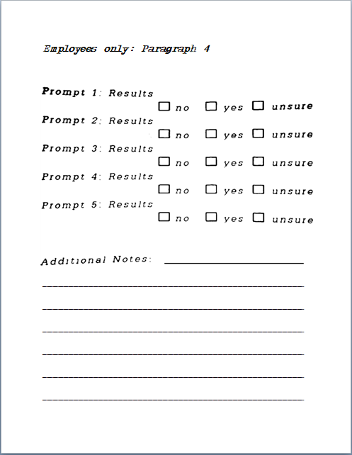

This quarter taught me many things about HTML. These lessons that I was taught were applied to my portfolio. Everything such as tables, links, and even forms. All of them was used to make this portfolio. At first I had a hard time understanding these lessons, but because of the hands-on activities I was able to understand the lessons much quicker. I enjoy coding in HTML and because of this quarter it added more tags and attributes for me to use in the ICT subject. The easiest lesson for me was about Hyperlinks because it didn't have that much attributes and its syntax is very simple. While the hardest lesson for me was tables because I sometimes make a table but it is not displaying correctly and I can't figure out what the problem is. I hope to use these lessons in future activities while also learning new ones as well.
Click on the paper to get back
